| 日付 | 2017年4月16日（日） |
|---|---|
| 山域 | 日光周辺 |
| メンバー | 家族（妻、長女・6歳、長男・3歳） |
| 山行形態 | 子連れ日帰り |
| アクセス | 車 |
| ルート (Map) | 霧降高原駐車場 (9:02) - (9:55) 小丸山 - (10:53) 丸山 (11:56) - (12:21) 小丸山 - 霧降高原駐車場 |
しばらく山に行けていなかったので、1ヶ月ぶりに山に行くことにする。
アカヤシオを見に笠丸山に行こうと考えていたが、
調べてみると今年は開花が遅いらしく、まだほとんど咲いていないようだ。
急遽、違う山を探し、日光の丸山に行くことにする。
女峰山の一角にあり、ニッコウキスゲが有名な山だが、
展望も良さそうなので、開花期でないこの時期でも楽しめそうだ。
霧降高原の駐車場に到着。標高1340m。

最初から人工的な階段が始まる。ここは山というより観光地だ。
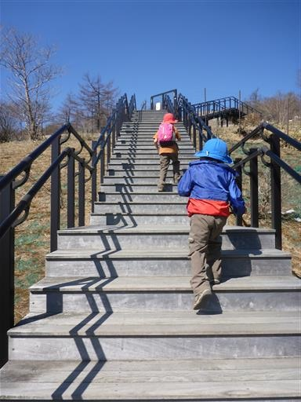
鹿除けのゲートを超える。ニッコウキスゲを鹿の食害から守るために、ネットで囲まれている。
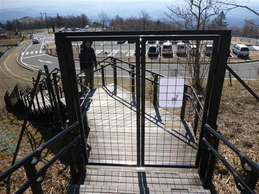
登り始めの場所が既に標高の高い場所だったため、眼下には折り重なる山々が見える。
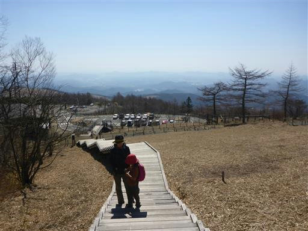
少し登ると周囲の雪が多くなってくる。
昨年の記録を見ると丸山まではほとんど雪が無かったのだが、今年は雪が多いようだ。
これは大きな誤算だ。
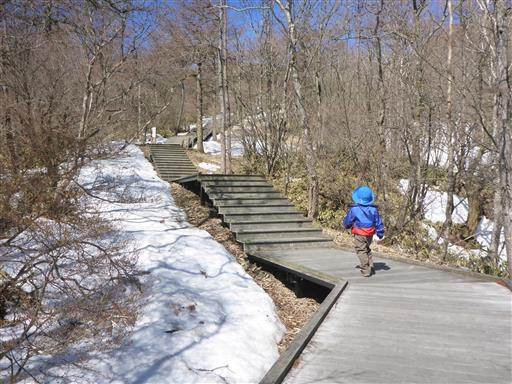
階段には100段ごとにコメントが記載されている。
霧降高原の一番上まで1445段の階段があるらしい。
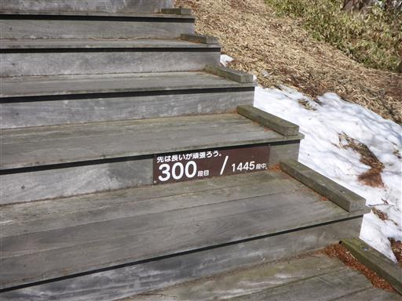
目指す丸山が見えてきた。名前のように丸い山容だ。
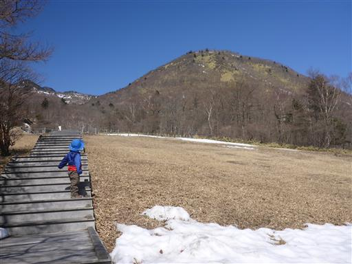
こちらは小丸山。小丸山までは階段が続いているので容易に辿り着けそうだ。
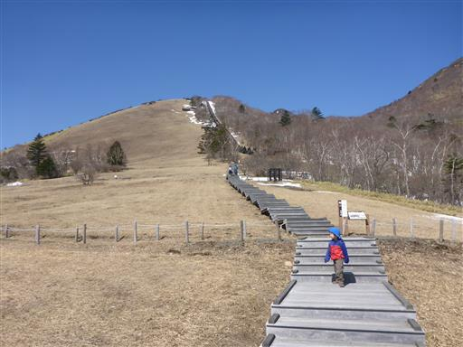
登ってきた階段を見下ろすとギザギザに見える。
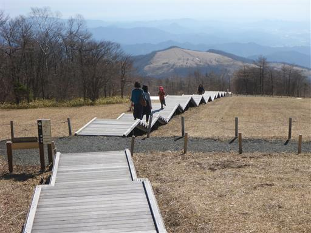
まだまだ階段は続く。山頂まで一直線だ。
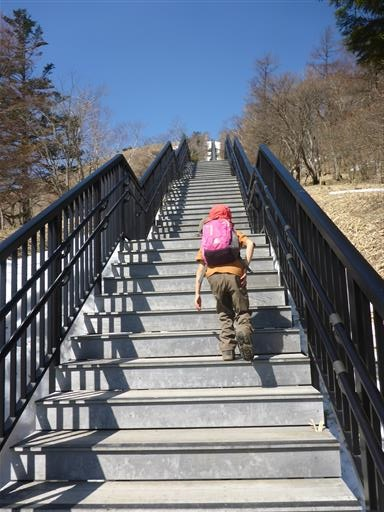
所々に展望台があって景色が眺められる。
右に見える火山は高原山、左奥に見えるのは男鹿山塊だ。
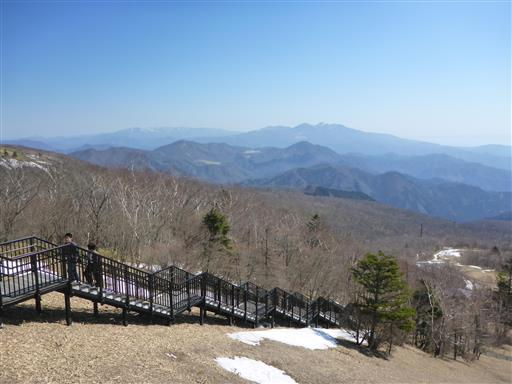
こちらは前日光の山々が折り重なっている。
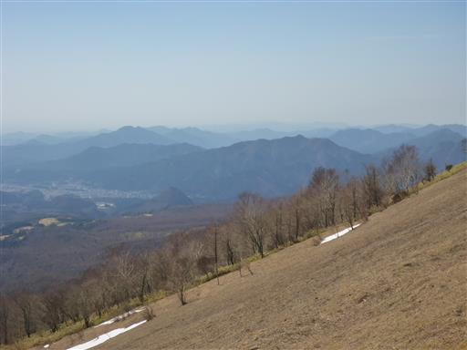
1445段の階段を登り切り、霧降高原の最高部に到着する。
ここには立派な展望台がある。
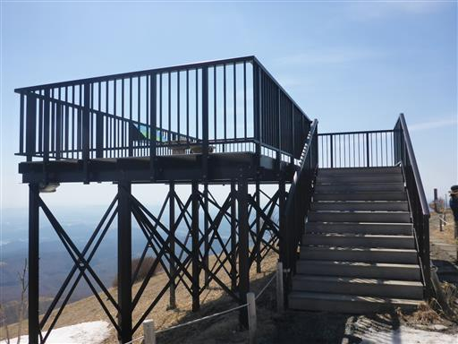
もちろんここからも素晴らしい展望が広がる。
眼下に見える草原が広がる山は以前登った大山だ。
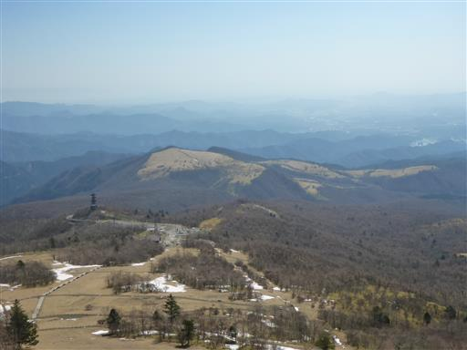
さて、ここからが今回の登山の本番。丸山に向けて歩を進める。
整備された階段はなくなり、歩き始めるとすぐに雪が現れる。

回転扉を通って鹿除けネットの外に出る。
ネットは一箇所途切れているため、用を成していない。
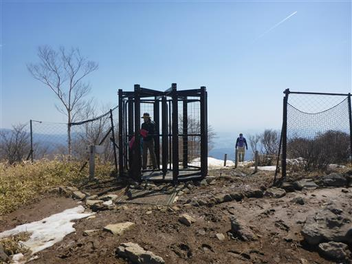
ここまで来ると赤薙山が間近に見える。
立派な山容で登行欲をそそられるが、今のパーティでは登頂不可能だ。
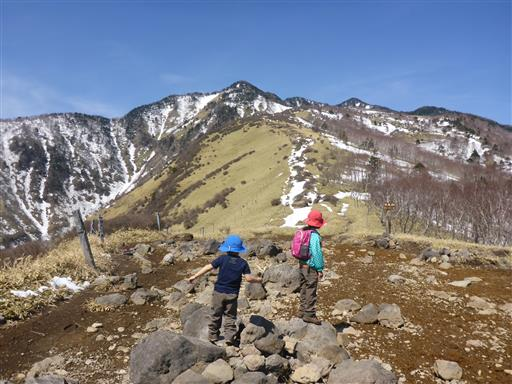
ここに小丸山の山頂標識がある。標高は1601m。
尾根が平坦になっている場所ではあるが、厳密にはピークではない。
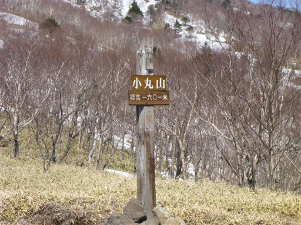
赤薙山方面の道と分かれて丸山方面に進む。
ほとんどの人は小丸山山頂までで、こちらに足を延ばす人は見当たらない。
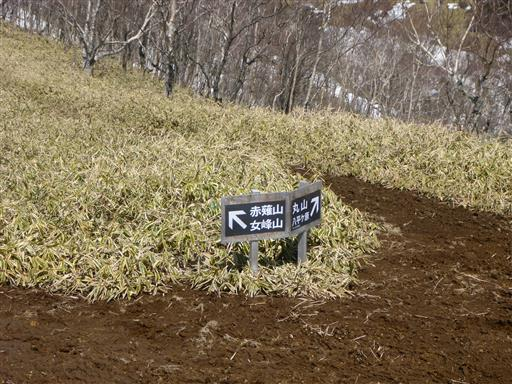
登山道は雪に覆われたトラバース道で非常に歩きにくい。
しばらく進んだが子連れでは埒が明かず、一旦小丸山まで引き返す。
しかし、ちょうど丸山から人が下山してきて話を聞いたところ、
子連れでも気を付けていけば大丈夫とのこと。意を決して再チャレンジする。
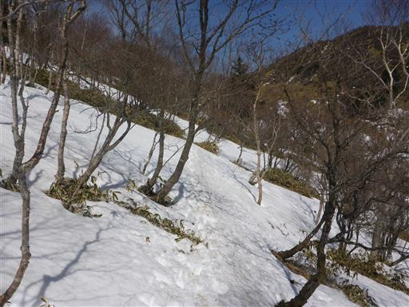
難しい場所は一部のみ。慎重に歩を進める。
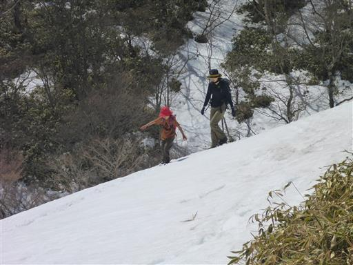
雪は半分解けていて、ところどころ夏道が現れる。
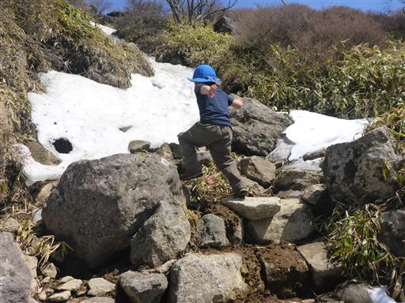
しばらく登ると平坦な地形の場所に出てくる。笹原が広がる非常に美しい所だ。
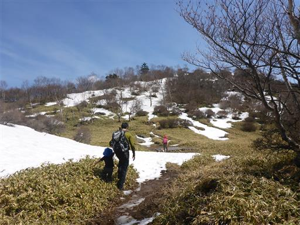
ここから再び雪の斜面を登っていく。
踏み跡はあまりはっきりしないため、適当に登っていく。
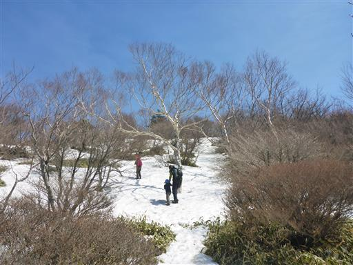
雪は決して深くないのだが、それが逆に良くなくて、所々で踏み抜いてしまう。
雪の下は空洞になっていることもあり、非常に登りづらい。
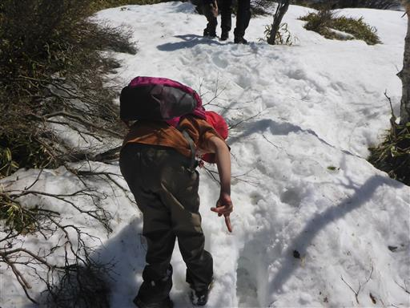
苦労の末、ようやく山頂が見えてきた。

丸山山頂に到着する。標高1689m。
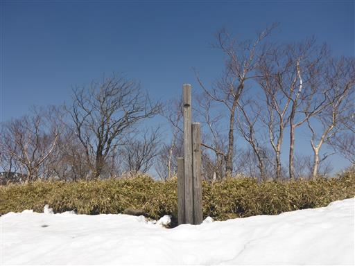
山頂は一部雪に覆われているが、腰を下ろして昼食をとるには十分なスペースがある。
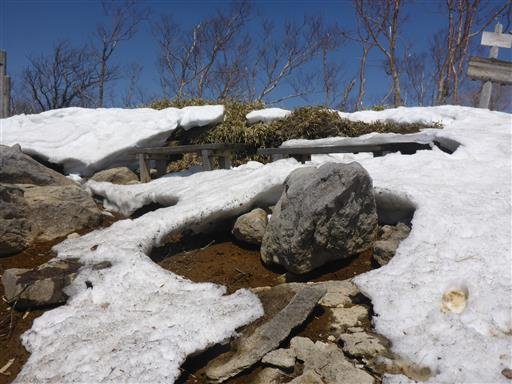
あちらこちらに雪の庇やスノーブリッジができている。
次々と雪が解けて、滴が流れ落ちている。
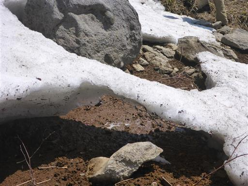
山頂からの展望は素晴らしい。振り返ると女峰山が大きい。
左のピークが赤薙山で女峰山の山頂は右のピークのさらに奥にある。
いつの日か赤薙山～女峰山を歩いてみたいものだ。

北の方角には雪に覆われた山が見えている。
山名はよく分からないが、マイナーピークのようだ。
山頂は他に誰もおらず、素晴らしい展望を一人（一家族？）占めだ。
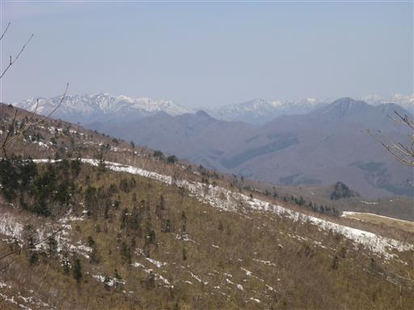
山頂には手ごろな大きさの石がたくさんあり、息子は石に登って遊んでいる。
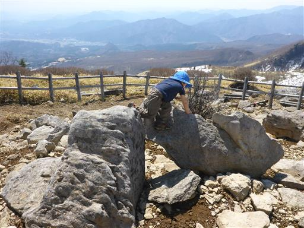
山頂から別のコースを下る周回コースがあるのだが、踏み跡は皆無だ。
行けないことはなさそうだが、安全策をとって無難に元来た道を引き返す。
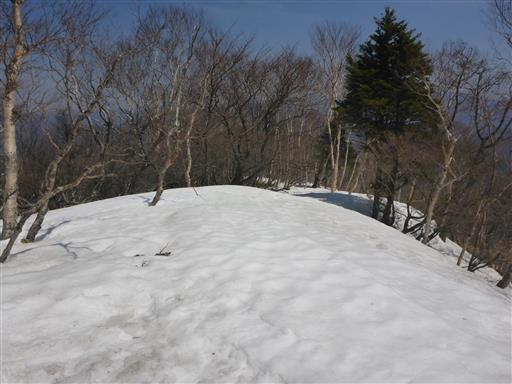
こちらの道も決して気は抜けない。十分に気を付けて下山する。
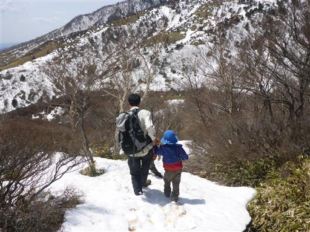
夏道と雪道が交互に現れる。
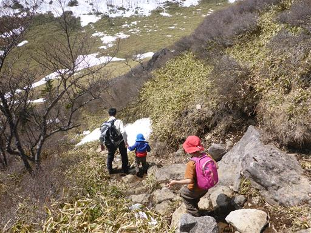
雪に隠された木道を慎重に歩く。雪が薄いところは歩きにくい。
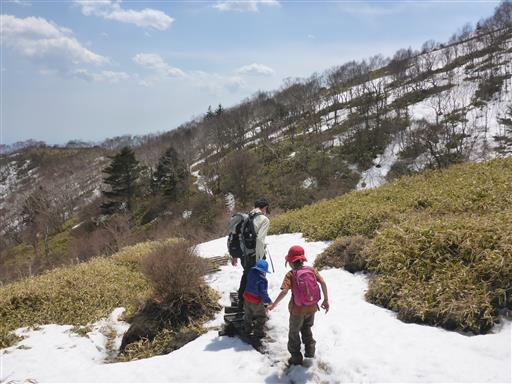
難易度の高い急斜面のトラバース道は息子を抱っこして一気に通り過ぎる。
吾国山でも雪に悩まされたため、息子はあまり雪が好きではないようだ。
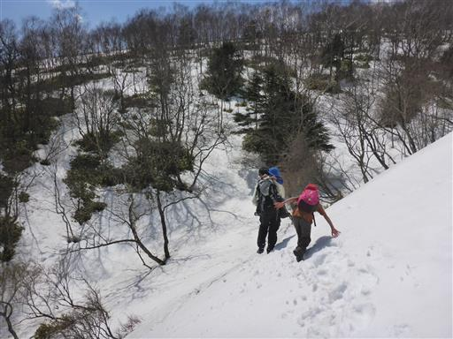
このまま小丸山まで一気に進む。
娘の靴は防水機能が弱く靴下まで濡れてしまっているため、文句タラタラだ。
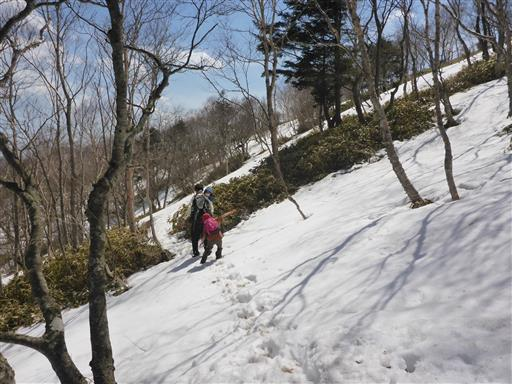
小丸山山頂まで戻ってくる。息子を下ろし、ようやく一息つく。
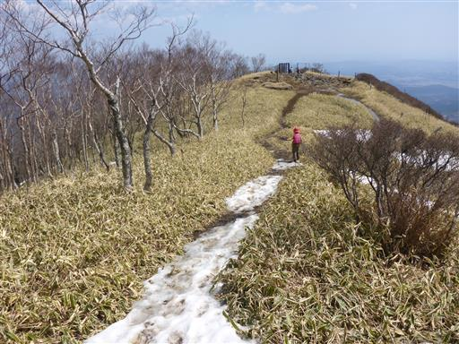
再び回転扉を通ってネットの中に入る。ネットはいつの間にか修復されている。
娘は回転扉が気に入ったようで2～3周している。
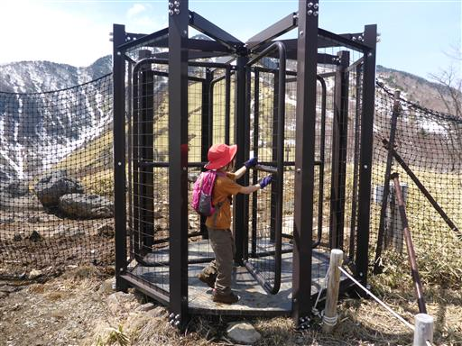
ここからは再び観光地。楽々下山だ。
階段ではなくジグザグにつけられた斜面を下っていくことにする。
今回は予想通り素晴らしい展望を楽しめたが、
思わぬ雪に苦しめられた登山になってしまった。
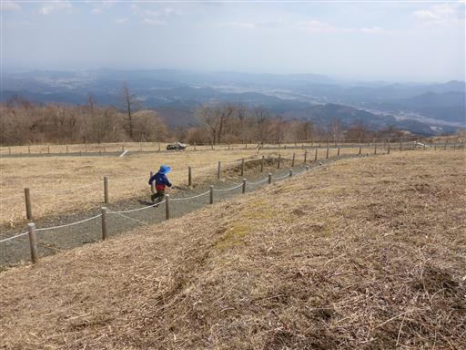